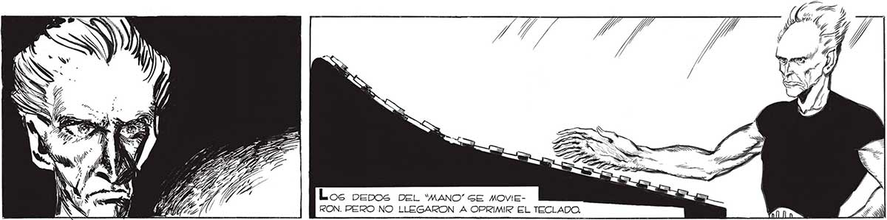
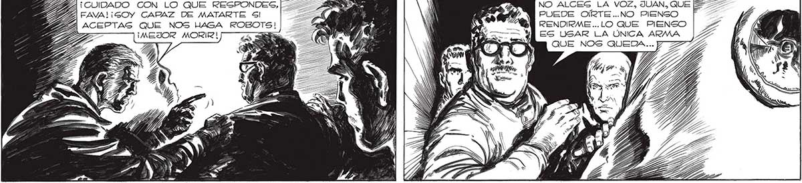

236 ¿NO QUIEREN MORIR? ¿PREFIEREN SER CONVERTIDOS EN UOMBRESROBOTS ? A ¡UN MOMENTO! ¿POR QUÉ NO? ¿ACASO O EMPIECES cd) | SE ARREPINTIERON DE TODAVIA ! be LA ELECCION, HOMBRES 2 PUEDE OÍRTE..NO PIENSO sz, RENDIRME ...LO QUE PIENSO L ES USAR LA ÚNICA ARMA PA QUE NOS QUEDA... 7 ZA QUE NOS HAGA ROBOTS! ¡MEJOR MORIR! j

